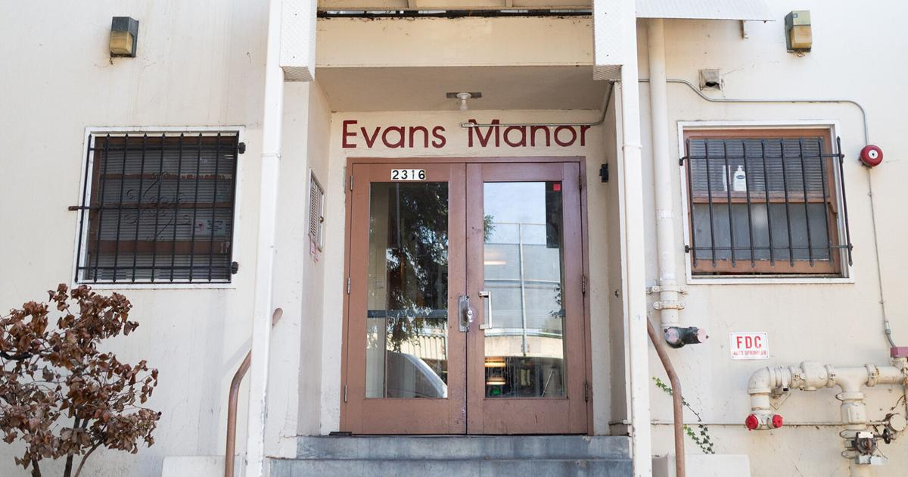

Independent property research & turnaround analysis
Prepared by Paul Wang · June 2026

Evans Manor is a roughly 120-unit residential building in Berkeley's Southside neighborhood, currently operated by the Berkeley Student Cooperative (BSC). The property suffers from a self-reinforcing cycle of poor resident culture and deferred maintenance, an estimated $9 million in needed repairs (as reported by The Mercury News), and a failed sale that collapsed in escrow in December 2025. This report outlines the current status quo, the structural causes of decline, and a turnaround strategy centered on management restructuring, a complete rebrand, and community-driven capital improvements.
The core problem at Evans Manor is cultural, and the physical decay follows from it:
On-site observation confirms widespread paint cracking, damaged walls, and a general state of grime throughout the building. These findings are consistent with public reporting: The Mercury News reports that approximately $9 million in repairs are needed to bring the property up to standard. Documented issues at the building have also included mold, water intrusion, and heating failures, underscoring that the deferred maintenance extends well beyond cosmetics.
A personal note on the interior: the original interior design is, in my assessment, actually quite pleasant — the bones of the building have genuine character. However, based on the experiences of other residents, the current state of the building is so degraded that the space evokes trauma rather than charm. The asset's underlying design is salvageable; its current condition and associations are not.
A proposed development of the property's parking lot was rejected in December 2025, and the previous deal fell through as a result. The collapse of that transaction leaves the current owner holding a deteriorating asset with mounting monthly emergency repair costs — and creates an opening for a new strategy, since the status quo is financially unsustainable for the present ownership.
Evans Manor has historically operated with a single property manager. For a building of roughly 120 units, this is almost impossible — no one person can stay ahead of maintenance requests, enforce community standards, and manage tenant relations at that scale.
The recommendation is to move to four property managers, structured similarly to a Resident Advisor (RA) model: management staff live on-site and receive free housing as compensation. This achieves three things at once:
The building needs a full rebrand, including a complete name change. The new name should not be generic; it should signal the direction of a new culture. The "Evans Manor" name now carries decades of negative association — habitability complaints, press coverage, and resident horror stories. A turnaround that keeps the name fights uphill against that history.
Culture change is the foundation of the strategy. The goal is to deliberately construct communities within the building rather than letting 120 units exist as anonymous, disconnected tenants. The RA-style management model supports this directly.
Capital improvements should follow resident demand rather than assumptions. Specifically: if survey results show that residents prefer kitchens, install one kitchen per floor. Shared kitchens double as community spaces, reinforcing the culture strategy.
Beyond targeted amenities, the property requires a broad build-out and refurnishing program — addressing the paint cracks, damaged walls, and overall cleanliness, and restoring the interior to the quality its original design supports.
Evans Manor is a distressed asset with a clear causal chain behind its decline: an under-resourced management structure allowed culture to decay, culture decay accelerated physical decay, and physical decay (now ~$9M deep) killed the previous exit attempt in December 2025. Each link in that chain is addressable. With a 4-manager RA-style structure, a complete rebrand, community-building programming, and survey-driven capital improvements, the property's fundamentals — location, scale, and a genuinely pleasant underlying interior design — support a credible turnaround.